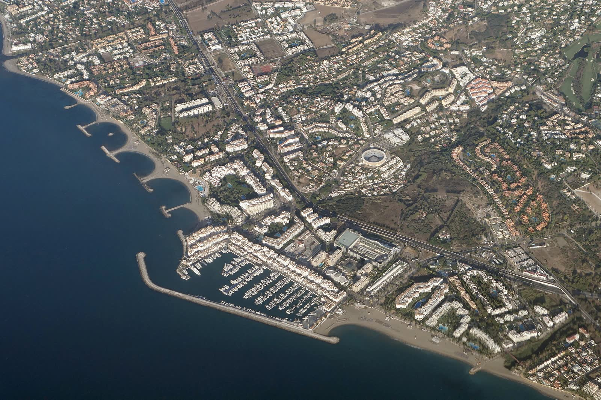

Seguridad Residencial
Para Particulares
y Familias
Le damos información clara sobre la zona donde va a vivir: seguridad, servicios, entorno y calidad de vida.
Estudio Residencial
Seguridad Residencial
Le damos información clara sobre la zona donde va a vivir: seguridad, servicios, entorno y calidad de vida.
Estudio ResidencialInteligencia Territorial
Información territorial detallada y análisis de zona para que tome decisiones fundamentadas.
Solicitar informe de zonaÁreas de Cobertura
Nuestra actividad se concentra en tres de las áreas más valoradas y demandadas de la costa mediterránea.
 01
Costa Blanca
Alicante
Zona de cobertura: Alicante ciudad, El Campello, San Juan, San Vicente del Raspeig y municipios limítrofes.
Ver análisis de zona
01
Costa Blanca
Alicante
Zona de cobertura: Alicante ciudad, El Campello, San Juan, San Vicente del Raspeig y municipios limítrofes.
Ver análisis de zona
 02
Capital de la Costa
Málaga
Zona de cobertura: Málaga capital, Torremolinos, Benalmádena, Fuengirola y el corredor de la A-7.
Ver análisis de zona
02
Capital de la Costa
Málaga
Zona de cobertura: Málaga capital, Torremolinos, Benalmádena, Fuengirola y el corredor de la A-7.
Ver análisis de zona
 03
Costa del Sol
Marbella
Zona de cobertura: Marbella, Benahavís, Estepona, San Pedro Alcántara y la Sierra Blanca.
Ver análisis de zona
03
Costa del Sol
Marbella
Zona de cobertura: Marbella, Benahavís, Estepona, San Pedro Alcántara y la Sierra Blanca.
Ver análisis de zona
De forma excepcional, realizamos informes territoriales en el extranjero y en otras ciudades bajo demanda. Los costes requerirán un presupuesto personalizado.
Servicios Especializados
Trabajamos tanto con personas y familias que van a vivir en la zona, como con inversores que necesitan conocerla antes de actuar.
Seguridad Residencial
Le decimos si la zona donde quiere vivir es segura, bien equipada y rentable a largo plazo.
Solicitar informe residencialInteligencia Territorial
Antes de comprometerse, conozca a fondo la zona: quién la habita, qué infraestructura tiene y qué dice la normativa.
Solicitar informe de zonaElija la zona, díganos qué le preocupa y reciba el expediente completo. Sin compromiso hasta que confirme el encargo.
Solicitar Informe de Zona